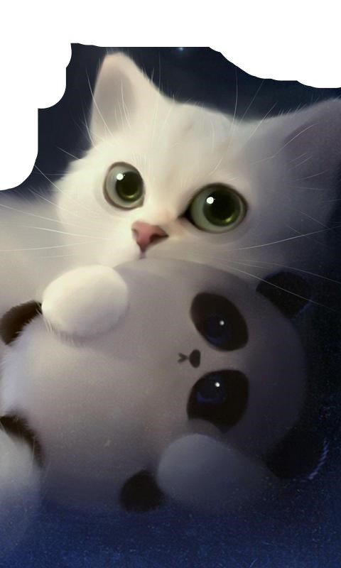

Hyperblog
Tu blog de confianza
Este es el Título atractivo e interesante del post
Y este es el párrafo de inicio donde vamos a explicar las cosas increíbles que se pueden hacen con ramas

Los blogs son la mejor forma de compartir información y tus ideas. Mucho mas que ir a conferencias o salir en Youtue. Excepto si eres un rockstar. Pero estadisticamente no lo eres... por ahora.
Suscriete y dale like